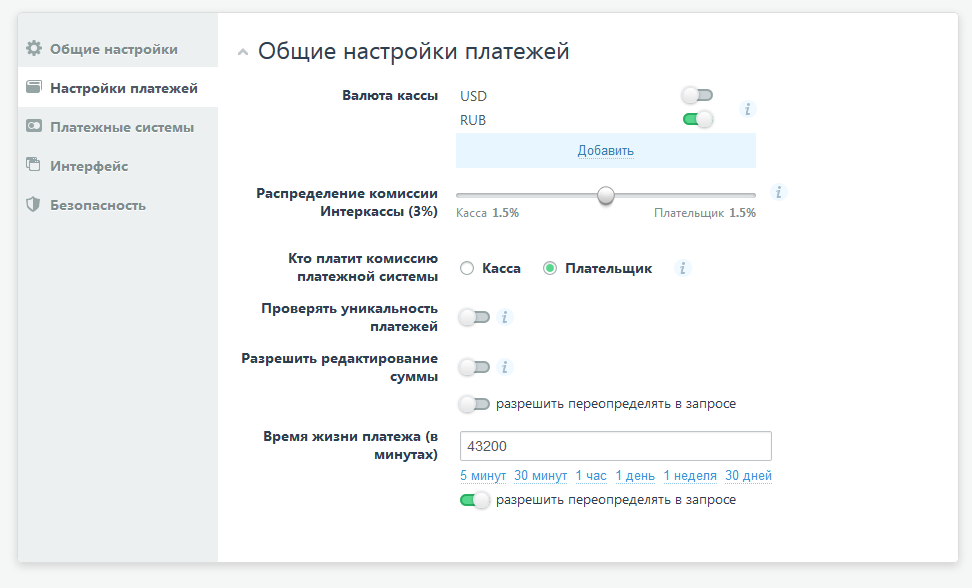
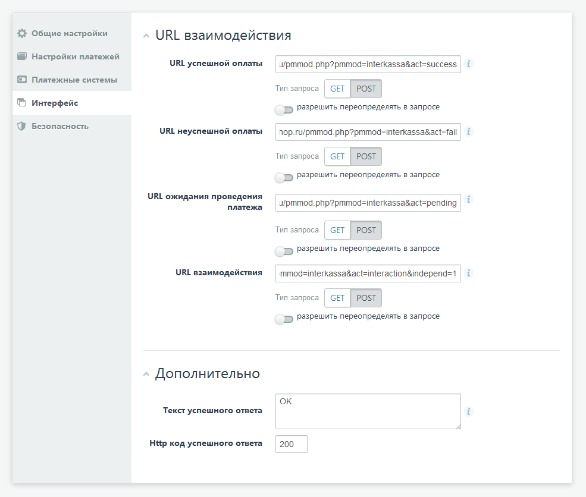
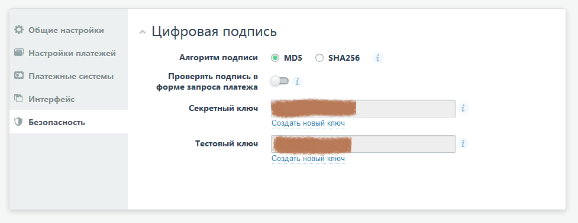

Включите валюту, в которой будете выставлять счета.
Разрешить редактирование суммы: отключено

URL успешной оплаты: http://www.example.com/pmmod.php?pmmod=interkassa&act=success
Тип запроса: POST
Разрешить переопределять в запросе: отключено
URL неуспешной оплаты: http://www.example.com/pmmod.php?pmmod=interkassa&act=fail
Тип запроса: POST
Разрешить переопределять в запросе: отключено
URL ожидания проведения платежа: http://www.example.com/pmmod.php?pmmod=interkassa&act=pending
Тип запроса: POST
Разрешить переопределять в запросе: отключено
URL взаимодействия: http://www.example.com/pmmod.php?pmmod=interkassa&act=interaction&independ=1
Тип запроса: POST
Разрешить переопределять в запросе: отключено
где вместо www.example.com используйте доменное имя вашего магазина.
"Дополнительно / Текст успешного ответа" (без пробелов, с учетом регистра):
OK
HTTP код успешного ответа (без пробелов): 200

Алгоритм подписи: MD5
Проверять подпись в форме запроса платежа: отключено
Секретный ключ: заполнить
Тестовый ключ: заполнить

В папке pm_modules/interkassa переименуйте файл pmmod_conf.php.example в pmmod_conf.php
Откройте его в текстовом редакторе, измените в нём настройки.
В панели администрирования интернет-магазина "Настройки / Способы оплаты" создайте способ оплаты, например, с названием Интеркасса. В выпадающем списке "Подключить платежный модуль" выберите "Интеркасса", одну валюту, в которой будете выставлять счета (при выборе покупателем конечного способа оплаты на сайте Интеркасса курс пересчитывается сайтом Интеркасса в зависимости от валюты способа оплаты) и сохраните изменения.
Для включения рабочего режима приёма платежей отключите тестовый режим в файле
pm_modules/interkassa/pmmod_conf.php.